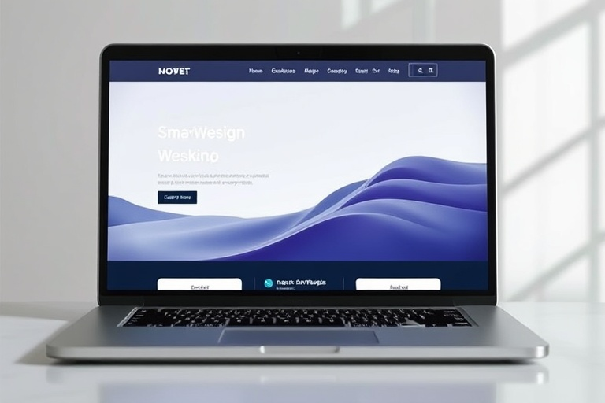
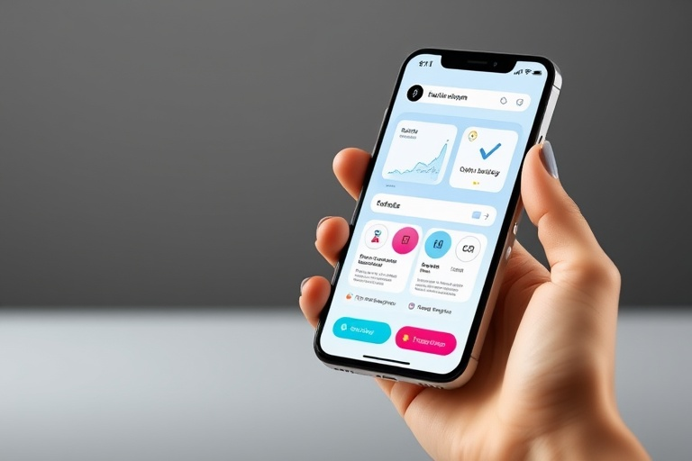
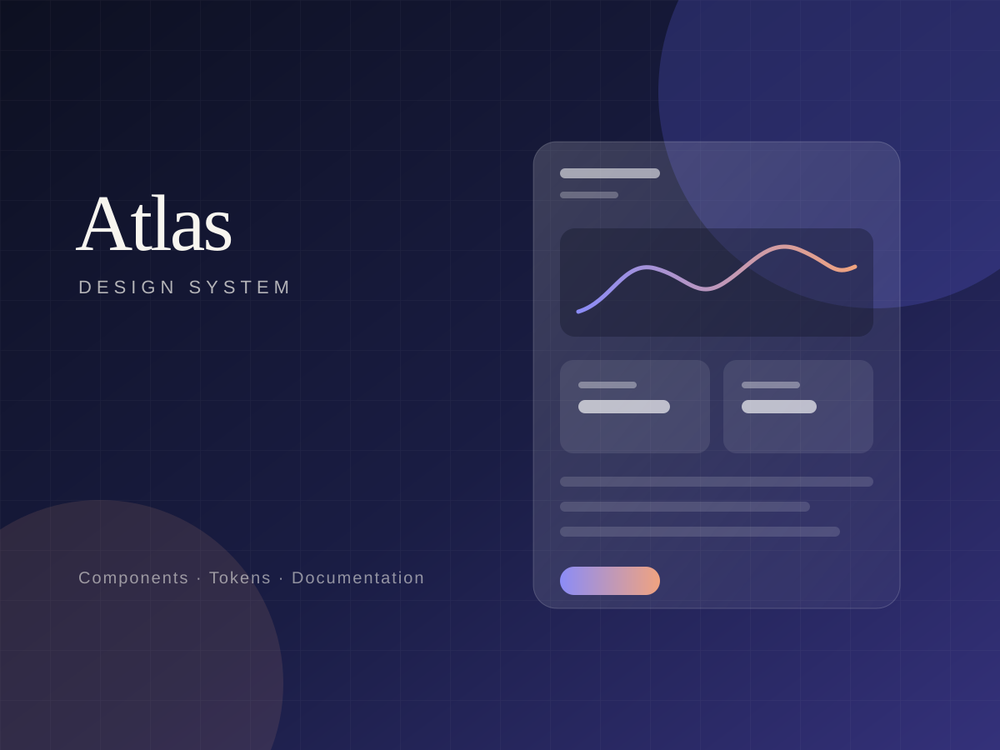

Clarity first
Every element should help someone understand or act. If it does not, it has to earn its place.
Available for select projects Remote worldwide
Ashley Miller
I'm a creative designer, front-end developer, and systems thinker helping founders and small teams turn complex ideas into thoughtful products, editorial websites, and brand systems.

About the practice
I work at the intersection of design and front-end development, where a clear interaction model matters as much as the surface people see.
My approach is practical and collaborative: understand the problem, make the structure visible, then build the smallest useful version with care. The result is work that feels calm to use and maintainable to carry forward.
Every element should help someone understand or act. If it does not, it has to earn its place.
Design decisions get stronger when they meet real content, real breakpoints, and real browser behaviour.
Shared foundations and clear documentation help a small team move quickly without losing consistency.
Selected work

Web design · Development · 2025
A quieter storefront concept for a slow-living homeware label, built around editorial storytelling and a frictionless path to checkout.
View case study
Product design · 2025
A sleep and focus companion that replaces streaks and scores with gentle, evidence-informed routines.
View case study
Development · Product design · 2025
A design system for data-heavy products, built to help small teams ship consistent interfaces without a dedicated platform squad.
View case studyAll projects shown are self-initiated concept work created for this portfolio.
Ways to work together
Turn a fuzzy product idea into a clear, testable interface.
Explore serviceEditorial websites that look considered and load quickly.
Explore serviceShared foundations that help teams ship consistent work.
Explore serviceWorking principle
“Good design is not the loudest thing on the page. It is the thing that makes the next step obvious.”
From the journal
 Sample article
Sample article
The next wave of interface design is less about spectacle and more about reducing the number of decisions a person has to make.
Read article Sample article
Sample article
A short list of habits that make front-end work more resilient: semantic HTML, honest states, fewer dependencies, and accessibility as a definition of done.
Read articleA look at the unglamorous middle of design work: collecting too much, finding the problem, and editing until the interface has a point of view.
Read article